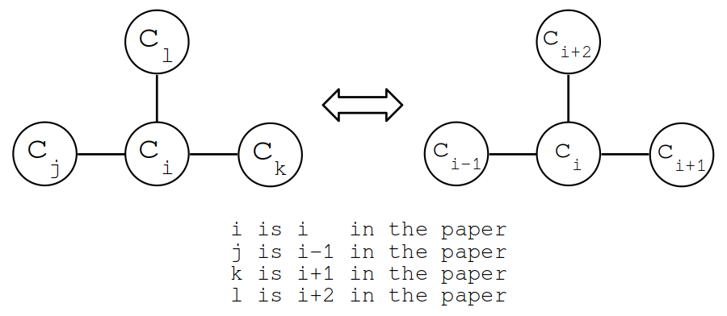
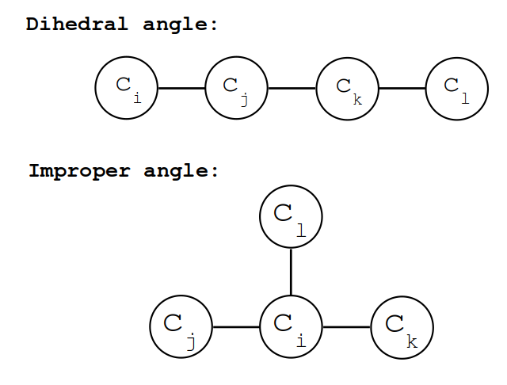

Module polyanagro.internal_coordinates
Miscellany of mathematical functions
Expand source code
"""
Miscellany of mathematical functions
"""
import math
import numpy as np
import random
# #############################################################################
def distance_array(ref, conf, openmp=False):
"""
Calculate the distances among the points in two arrays using C and Cython
Parameters:
* ``ref``: (type: ndarray): Reference array containing a number of points with shape [npoints1, dim], where dim is the dimension in 2-D or 3-D points
* ``conf``: (type: ndarray): Reference array containing a number of points with shape [npoints2, dim], where dim is the dimension in 2-D or 3-D points
* ``openmp``: (type: boolean) Parallel or not
Returns:
* ``dist``: (type: 2D-ndarray). Distances in Angstroms between the ith atom (row) and the jth atoms
* ``rijx``: (type: 2D-ndarray). Component-x of the vector i,j
* ``rijy``: (type: 2D-ndarray). Component-y of the vector i,j
* ``rijz``: (type: 2D-ndarray). Component-z of the vector i,j
``Examples``:
>>> a
>>> a
"""
if openmp:
from ext_libc.c_distances_openmp import calc_distance_array_openmp
#from c_distances_openmp import calc_distance_array_openmp
else:
from ext_libc.c_distances import calc_distance_array
#from c_distances import calc_distance_array
rows = ref.shape[0]
cols = conf.shape[0]
dist = np.zeros([rows,cols])
rijx = np.zeros([rows,cols])
rijy = np.zeros([rows,cols])
rijz = np.zeros([rows,cols])
if openmp:
calc_distance_array_openmp(ref, conf, dist, rijx, rijy, rijz)
else:
calc_distance_array(ref, conf, dist, rijx, rijy, rijz)
return dist, rijx, rijy, rijz
# #############################################################################
def distance_diagonal_array(ref, conf, openmp=False):
"""Calculate the distances among the points in two arrays using C and Cython
``Parameters``:
* **ref**: (type: ndarray): Reference array containing a number of points with shape [npoints, dim], where dim is the dimension in 2-D or 3-D points
* **conf**: (type: ndarray): Reference array containing a number of points with shape [npoints, dim], where dim is the dimension in 2-D or 3-D points
* **openmp**: (type: boolean) Parallel or not
``Returns``:
* **dist**: (type: 1D-ndarray). Distances in Angstroms between the ith atom and jth atoms in the same row of the ref and coor arrays
* **rijx**: (type: 1D-ndarray). Component-x of the vector i,j
* **rijy**: (type: 1D-ndarray). Component-y of the vector i,j
* **rijz**: (type: 1D-ndarray). Component-z of the vector i,j
``Examples``:
>>>
>>>
"""
if openmp:
from ext_libc.c_distances_openmp import calc_distance_diagonal_openmp
#from c_distances_openmp import calc_distance_array_openmp
else:
from ext_libc.c_distances import calc_distance_diagonal
#from c_distances import calc_distance_array
rows = ref.shape[0]
dist = np.zeros([rows])
rijx = np.zeros([rows])
rijy = np.zeros([rows])
rijz = np.zeros([rows])
if openmp:
calc_distance_diagonal_openmp(ref, conf, dist, rijx, rijy, rijz)
else:
calc_distance_diagonal(ref, conf, dist, rijx, rijy, rijz)
return dist, rijx, rijy, rijz
# #############################################################################
def distance_array_numpypython(ref, conf):
"""Calculate the distances among the points in two arrays unsing pure pyhton and numpy
``Parameters``:
* **ref**: (type: ndarray): Reference array containing a number of points with shape [npoints1, dim], where dim is the dimension in 2-D or 3-D points
* **conf**: (type: ndarray): Reference array containing a number of points with shape [npoints2, dim], where dim is the dimension in 2-D or 3-D points
* **openmp**: (type: boolean) Parallel or not
``Returns``:
* **dist**: (type: 2D-ndarray). Distances in Angstroms between the ith atom (row) and the jth atoms
* **rijx**: (type: 2D-ndarray). Component-x of the vector i,j
* **rijy**: (type: 2D-ndarray). Component-y of the vector i,j
* **rijz**: (type: 2D-ndarray). Component-z of the vector i,j
``Examples``:
>>>
>>>
>>>
>>>
"""
rows = ref.shape[0]
cols = conf.shape[0]
dist = np.zeros([rows,cols])
rijx = np.zeros([rows,cols])
rijy = np.zeros([rows,cols])
rijz = np.zeros([rows,cols])
irow = 0
for ipoint in ref:
icol = 0
for jpoint in conf:
rijx[irow, icol], rijy[irow, icol], rijz[irow, icol] = jpoint-ipoint
dist[irow, icol] = np.linalg.norm(ipoint-jpoint)
icol += 1
irow += 1
return dist, rijx, rijy, rijz
# #############################################################################
def distance_array_purepython(ref, conf):
"""Calculate the distances among the points in two arrays unsing pure pyhton
``Parameters``:
* **ref**: (type: ndarray): Reference array containing a number of points with shape [npoints1, dim], where dim is the dimension in 2-D or 3-D points
* **conf**: (type: ndarray): Reference array containing a number of points with shape [npoints2, dim], where dim is the dimension in 2-D or 3-D points
* **openmp**: (type: boolean) Parallel or not
``Returns``:
* **dist**: (type: 2D-ndarray). Distances in Angstroms between the ith atom (row) and the jth atoms
``Examples``:
>>>
>>>
>>>
>>>
"""
rows = ref.shape[0]
cols = conf.shape[0]
dist = np.zeros([rows,cols])
rijx = np.zeros([rows,cols])
rijy = np.zeros([rows,cols])
rijz = np.zeros([rows,cols])
irow = 0
for ipoint in ref:
icol = 0
for jpoint in conf:
rijx[irow,icol] = jpoint[0] - ipoint[0]
rijy[irow,icol] = jpoint[1] - ipoint[1]
rijz[irow,icol] = jpoint[2] - ipoint[2]
dist[irow, icol] = math.sqrt(rijx[irow,icol]*rijx[irow,icol]+
rijy[irow,icol]*rijy[irow,icol]+
rijz[irow,icol]*rijz[irow,icol])
icol += 1
irow += 1
return dist, rijx, rijy, rijz
# #############################################################################
def bend_angle_purepython(c1, c2, c3, radians=False):
"""
Bend angle
Finds angle between three atomic positions.
Periodic boundary conditions are not taken into account, thus, coordinates must be unwrapped.
This implementation is made in pure python, so it can be slow
(1) --- (2) --- (3) (Bend angle 1-2-3)
Parameters:
* ``c1`` : Coordinates of the point 1
* ``c2`` : Coordinates of the point 2
* ``c3`` : Coordinates of the point 3
* ``radians``: returns value in radians (degrees) if True (False)
Returns:
angle between particles in radians or degrees
"""
p12 = distance_array(c1.reshape(1,3), c2.reshape(1,3))
p23 = distance_array(c2.reshape(1,3), c3.reshape(1,3))
p13 = distance_array(c1.reshape(1,3), c3.reshape(1,3))
theta = math.acos((pow(p12, 2.)+pow(p23, 2.)-pow(p13, 2.))/(2.*p12*p23))
if not radians:
theta = theta * 180. / math.pi
return theta
# #############################################################################
def dihedral_angle_purepython(ci, cj, ck, cl, radians=False):
"""
Calculate the dihedral or improper angle
.. image:: ../../figures/dih_imp.png
Parameters:
* ``ci`` :
* ``cj`` :
* ``ck`` :
* ``cl`` :
* ``radians`` :
Returns:
* ``phi`` :
"""
rij = ci - cj
rjk = cj - ck
rlk = cl - ck
m = np.cross(rij, rjk)
n = np.cross(rlk, rjk)
m_norm = np.linalg.norm(m)
n_norm = np.linalg.norm(n)
cos_ijkl = np.dot(m,n)/(m_norm*n_norm)
sin_ijkl = np.dot(n,rij)*np.linalg.norm(rjk)/(m_norm*n_norm)
phi = -np.arctan(sin_ijkl/cos_ijkl)
if not radians:
phi = phi * 180. / math.pi
return phi
# #############################################################################
def cos_angle_purepython(ci, cj, ck, cl, radians=False):
"""
Calculate the cos angle, used for bond perception in the paper
Zhang et al. Journal of Cheminformatics 2012, 4:26 (Figure 4)
(https://jcheminf.biomedcentral.com/articles/10.1186/1758-2946-4-26)
.. image:: ../../figures/cos_angle.png
Parameters:
* ``ci`` :
* ``cj`` :
* ``ck`` :
* ``cl`` :
* ``radians`` :
Returns:
angle between particles in radians or degrees
"""
rji = cj - ci
rki = ck - ci
rli = cl - ci
m = np.cross(rji, rki)
m_norm = np.linalg.norm(m)
rli_norm = np.linalg.norm(rli)
cos_ijkl = np.dot(m,rli)/(m_norm*rli_norm)
phi = np.arccos(cos_ijkl)
if not radians:
phi = phi * 180. / math.pi
return phi
# #############################################################################
def generate_random_euler_angles(seed=None):
"""
Generate Euler angles.
To generate an uniform sampling of the three Euler angles:
.. image:: euler_angles_random.png
There are many definitions of the Euler angles
(see: https://en.wikipedia.org/wiki/Euler_angles)
``Parameters``:
* **iseed** (type: int): Seed for the random number generator
``Return``:
* **A vector** containg the three Euler angles in radians
"""
if seed is None:
random.seed()
else:
random.seed(seed)
alpha = 2.0 * math.pi * random.random() #Radians
c_beta = 1.0 - 2.0 * random.random()
beta = math.acos(c_beta) #Radians
gamma = 2.0 * math.pi * random.random() #Radians
return [alpha, beta, gamma]
# #############################################################################
def euler_rotation_matrix(euler):
"""
Create a rotation matrix for a given set of Euler angles
There are many definitions of the Euler angles
(see: https://en.wikipedia.org/wiki/Euler_angles)
The definition here used is that given in:
.. code-block::
MATHEMATICAL METHODS FOR PHYSICISTS
SEVENTH EDITION
George B. Arfken, Hans J. Weber, Frank E. Harris
pag: 140-142
.. image:: euler_book.png
``Parameters``:
* **None**
``Returns``:
* **None**
"""
a = euler[0]
b = euler[1]
g = euler[2]
ca = math.cos(a)
cb = math.cos(b)
cg = math.cos(g)
sa = math.sin(a)
sb = math.sin(b)
sg = math.sin(g)
S = np.array([ [( cg*cb*ca) - (sg*sa), ( cg*cb*sa) + (sg*ca), -cg*sb],
[(-sg*cb*ca) - (cg*sa), (-sg*cb*sa) + (cg*ca), sg*sb],
[ sb*ca , sb*sa , cb]])
return S
# #############################################################################
def center_of_geom(coords):
"""
Calculate the center of geometry of a set of coordinates.
Periodic boundary conditions are not taken into account.
This implementation is made in pure python, so it can be slow
Parameters:
* ``coords``: (type: list of ndarray-float32 (3)): Coordinates of the atoms. It must be unwrapped.
Return:
* ``cog`` (type: ndarray vector): Coordinates of the geometry center.
"""
if isinstance(coords,list):
_coords = np.asarray(coords)
elif isinstance(coords,np.ndarray):
_coords = coords
else:
return None
tmp = np.zeros(3)
natoms = _coords.shape[0]
for iatom in range(natoms):
tmp += _coords[iatom,:]
cog = tmp/natoms
return cogFunctions
def bend_angle_purepython(c1, c2, c3, radians=False)-
Bend angle
Finds angle between three atomic positions. Periodic boundary conditions are not taken into account, thus, coordinates must be unwrapped. This implementation is made in pure python, so it can be slow
(1) --- (2) --- (3) (Bend angle 1-2-3)Parameters
c1: Coordinates of the point 1c2: Coordinates of the point 2c3: Coordinates of the point 3radians: returns value in radians (degrees) if True (False)
Returns
angle between particles in radians or degrees
Expand source code
def bend_angle_purepython(c1, c2, c3, radians=False): """ Bend angle Finds angle between three atomic positions. Periodic boundary conditions are not taken into account, thus, coordinates must be unwrapped. This implementation is made in pure python, so it can be slow (1) --- (2) --- (3) (Bend angle 1-2-3) Parameters: * ``c1`` : Coordinates of the point 1 * ``c2`` : Coordinates of the point 2 * ``c3`` : Coordinates of the point 3 * ``radians``: returns value in radians (degrees) if True (False) Returns: angle between particles in radians or degrees """ p12 = distance_array(c1.reshape(1,3), c2.reshape(1,3)) p23 = distance_array(c2.reshape(1,3), c3.reshape(1,3)) p13 = distance_array(c1.reshape(1,3), c3.reshape(1,3)) theta = math.acos((pow(p12, 2.)+pow(p23, 2.)-pow(p13, 2.))/(2.*p12*p23)) if not radians: theta = theta * 180. / math.pi return theta def center_of_geom(coords)-
Calculate the center of geometry of a set of coordinates. Periodic boundary conditions are not taken into account. This implementation is made in pure python, so it can be slow
Parameters
coords: (type: list of ndarray-float32 (3)): Coordinates of the atoms. It must be unwrapped.
Return
cog(type: ndarray vector): Coordinates of the geometry center.
Expand source code
def center_of_geom(coords): """ Calculate the center of geometry of a set of coordinates. Periodic boundary conditions are not taken into account. This implementation is made in pure python, so it can be slow Parameters: * ``coords``: (type: list of ndarray-float32 (3)): Coordinates of the atoms. It must be unwrapped. Return: * ``cog`` (type: ndarray vector): Coordinates of the geometry center. """ if isinstance(coords,list): _coords = np.asarray(coords) elif isinstance(coords,np.ndarray): _coords = coords else: return None tmp = np.zeros(3) natoms = _coords.shape[0] for iatom in range(natoms): tmp += _coords[iatom,:] cog = tmp/natoms return cog def cos_angle_purepython(ci, cj, ck, cl, radians=False)-
Calculate the cos angle, used for bond perception in the paper Zhang et al. Journal of Cheminformatics 2012, 4:26 (Figure 4) (https://jcheminf.biomedcentral.com/articles/10.1186/1758-2946-4-26)

Parameters
ci:cj:ck:cl:radians:
Returns
angle between particles in radians or degrees
Expand source code
def cos_angle_purepython(ci, cj, ck, cl, radians=False): """ Calculate the cos angle, used for bond perception in the paper Zhang et al. Journal of Cheminformatics 2012, 4:26 (Figure 4) (https://jcheminf.biomedcentral.com/articles/10.1186/1758-2946-4-26) .. image:: ../../figures/cos_angle.png Parameters: * ``ci`` : * ``cj`` : * ``ck`` : * ``cl`` : * ``radians`` : Returns: angle between particles in radians or degrees """ rji = cj - ci rki = ck - ci rli = cl - ci m = np.cross(rji, rki) m_norm = np.linalg.norm(m) rli_norm = np.linalg.norm(rli) cos_ijkl = np.dot(m,rli)/(m_norm*rli_norm) phi = np.arccos(cos_ijkl) if not radians: phi = phi * 180. / math.pi return phi def dihedral_angle_purepython(ci, cj, ck, cl, radians=False)-
Calculate the dihedral or improper angle

Parameters
ci:cj:ck:cl:radians:
Returns
phi:
Expand source code
def dihedral_angle_purepython(ci, cj, ck, cl, radians=False): """ Calculate the dihedral or improper angle .. image:: ../../figures/dih_imp.png Parameters: * ``ci`` : * ``cj`` : * ``ck`` : * ``cl`` : * ``radians`` : Returns: * ``phi`` : """ rij = ci - cj rjk = cj - ck rlk = cl - ck m = np.cross(rij, rjk) n = np.cross(rlk, rjk) m_norm = np.linalg.norm(m) n_norm = np.linalg.norm(n) cos_ijkl = np.dot(m,n)/(m_norm*n_norm) sin_ijkl = np.dot(n,rij)*np.linalg.norm(rjk)/(m_norm*n_norm) phi = -np.arctan(sin_ijkl/cos_ijkl) if not radians: phi = phi * 180. / math.pi return phi def distance_array(ref, conf, openmp=False)-
Calculate the distances among the points in two arrays using C and Cython
Parameters
ref: (type: ndarray): Reference array containing a number of points with shape [npoints1, dim], where dim is the dimension in 2-D or 3-D pointsconf: (type: ndarray): Reference array containing a number of points with shape [npoints2, dim], where dim is the dimension in 2-D or 3-D pointsopenmp: (type: boolean) Parallel or not
Returns
dist: (type: 2D-ndarray). Distances in Angstroms between the ith atom (row) and the jth atomsrijx: (type: 2D-ndarray). Component-x of the vector i,jrijy: (type: 2D-ndarray). Component-y of the vector i,jrijz: (type: 2D-ndarray). Component-z of the vector i,jExamples:
>>> a >>> aExpand source code
def distance_array(ref, conf, openmp=False): """ Calculate the distances among the points in two arrays using C and Cython Parameters: * ``ref``: (type: ndarray): Reference array containing a number of points with shape [npoints1, dim], where dim is the dimension in 2-D or 3-D points * ``conf``: (type: ndarray): Reference array containing a number of points with shape [npoints2, dim], where dim is the dimension in 2-D or 3-D points * ``openmp``: (type: boolean) Parallel or not Returns: * ``dist``: (type: 2D-ndarray). Distances in Angstroms between the ith atom (row) and the jth atoms * ``rijx``: (type: 2D-ndarray). Component-x of the vector i,j * ``rijy``: (type: 2D-ndarray). Component-y of the vector i,j * ``rijz``: (type: 2D-ndarray). Component-z of the vector i,j ``Examples``: >>> a >>> a """ if openmp: from ext_libc.c_distances_openmp import calc_distance_array_openmp #from c_distances_openmp import calc_distance_array_openmp else: from ext_libc.c_distances import calc_distance_array #from c_distances import calc_distance_array rows = ref.shape[0] cols = conf.shape[0] dist = np.zeros([rows,cols]) rijx = np.zeros([rows,cols]) rijy = np.zeros([rows,cols]) rijz = np.zeros([rows,cols]) if openmp: calc_distance_array_openmp(ref, conf, dist, rijx, rijy, rijz) else: calc_distance_array(ref, conf, dist, rijx, rijy, rijz) return dist, rijx, rijy, rijz def distance_array_numpypython(ref, conf)-
Calculate the distances among the points in two arrays unsing pure pyhton and numpy
Parameters: * ref: (type: ndarray): Reference array containing a number of points with shape [npoints1, dim], where dim is the dimension in 2-D or 3-D points * conf: (type: ndarray): Reference array containing a number of points with shape [npoints2, dim], where dim is the dimension in 2-D or 3-D points * openmp: (type: boolean) Parallel or notReturns: * dist: (type: 2D-ndarray). Distances in Angstroms between the ith atom (row) and the jth atoms * rijx: (type: 2D-ndarray). Component-x of the vector i,j * rijy: (type: 2D-ndarray). Component-y of the vector i,j * rijz: (type: 2D-ndarray). Component-z of the vector i,jExamples:Expand source code
def distance_array_numpypython(ref, conf): """Calculate the distances among the points in two arrays unsing pure pyhton and numpy ``Parameters``: * **ref**: (type: ndarray): Reference array containing a number of points with shape [npoints1, dim], where dim is the dimension in 2-D or 3-D points * **conf**: (type: ndarray): Reference array containing a number of points with shape [npoints2, dim], where dim is the dimension in 2-D or 3-D points * **openmp**: (type: boolean) Parallel or not ``Returns``: * **dist**: (type: 2D-ndarray). Distances in Angstroms between the ith atom (row) and the jth atoms * **rijx**: (type: 2D-ndarray). Component-x of the vector i,j * **rijy**: (type: 2D-ndarray). Component-y of the vector i,j * **rijz**: (type: 2D-ndarray). Component-z of the vector i,j ``Examples``: >>> >>> >>> >>> """ rows = ref.shape[0] cols = conf.shape[0] dist = np.zeros([rows,cols]) rijx = np.zeros([rows,cols]) rijy = np.zeros([rows,cols]) rijz = np.zeros([rows,cols]) irow = 0 for ipoint in ref: icol = 0 for jpoint in conf: rijx[irow, icol], rijy[irow, icol], rijz[irow, icol] = jpoint-ipoint dist[irow, icol] = np.linalg.norm(ipoint-jpoint) icol += 1 irow += 1 return dist, rijx, rijy, rijz def distance_array_purepython(ref, conf)-
Calculate the distances among the points in two arrays unsing pure pyhton
Parameters: * ref: (type: ndarray): Reference array containing a number of points with shape [npoints1, dim], where dim is the dimension in 2-D or 3-D points * conf: (type: ndarray): Reference array containing a number of points with shape [npoints2, dim], where dim is the dimension in 2-D or 3-D points * openmp: (type: boolean) Parallel or notReturns: * dist: (type: 2D-ndarray). Distances in Angstroms between the ith atom (row) and the jth atomsExamples:Expand source code
def distance_array_purepython(ref, conf): """Calculate the distances among the points in two arrays unsing pure pyhton ``Parameters``: * **ref**: (type: ndarray): Reference array containing a number of points with shape [npoints1, dim], where dim is the dimension in 2-D or 3-D points * **conf**: (type: ndarray): Reference array containing a number of points with shape [npoints2, dim], where dim is the dimension in 2-D or 3-D points * **openmp**: (type: boolean) Parallel or not ``Returns``: * **dist**: (type: 2D-ndarray). Distances in Angstroms between the ith atom (row) and the jth atoms ``Examples``: >>> >>> >>> >>> """ rows = ref.shape[0] cols = conf.shape[0] dist = np.zeros([rows,cols]) rijx = np.zeros([rows,cols]) rijy = np.zeros([rows,cols]) rijz = np.zeros([rows,cols]) irow = 0 for ipoint in ref: icol = 0 for jpoint in conf: rijx[irow,icol] = jpoint[0] - ipoint[0] rijy[irow,icol] = jpoint[1] - ipoint[1] rijz[irow,icol] = jpoint[2] - ipoint[2] dist[irow, icol] = math.sqrt(rijx[irow,icol]*rijx[irow,icol]+ rijy[irow,icol]*rijy[irow,icol]+ rijz[irow,icol]*rijz[irow,icol]) icol += 1 irow += 1 return dist, rijx, rijy, rijz def distance_diagonal_array(ref, conf, openmp=False)-
Calculate the distances among the points in two arrays using C and Cython
Parameters: * ref: (type: ndarray): Reference array containing a number of points with shape [npoints, dim], where dim is the dimension in 2-D or 3-D points * conf: (type: ndarray): Reference array containing a number of points with shape [npoints, dim], where dim is the dimension in 2-D or 3-D points * openmp: (type: boolean) Parallel or notReturns: * dist: (type: 1D-ndarray). Distances in Angstroms between the ith atom and jth atoms in the same row of the ref and coor arrays * rijx: (type: 1D-ndarray). Component-x of the vector i,j * rijy: (type: 1D-ndarray). Component-y of the vector i,j * rijz: (type: 1D-ndarray). Component-z of the vector i,jExamples:Expand source code
def distance_diagonal_array(ref, conf, openmp=False): """Calculate the distances among the points in two arrays using C and Cython ``Parameters``: * **ref**: (type: ndarray): Reference array containing a number of points with shape [npoints, dim], where dim is the dimension in 2-D or 3-D points * **conf**: (type: ndarray): Reference array containing a number of points with shape [npoints, dim], where dim is the dimension in 2-D or 3-D points * **openmp**: (type: boolean) Parallel or not ``Returns``: * **dist**: (type: 1D-ndarray). Distances in Angstroms between the ith atom and jth atoms in the same row of the ref and coor arrays * **rijx**: (type: 1D-ndarray). Component-x of the vector i,j * **rijy**: (type: 1D-ndarray). Component-y of the vector i,j * **rijz**: (type: 1D-ndarray). Component-z of the vector i,j ``Examples``: >>> >>> """ if openmp: from ext_libc.c_distances_openmp import calc_distance_diagonal_openmp #from c_distances_openmp import calc_distance_array_openmp else: from ext_libc.c_distances import calc_distance_diagonal #from c_distances import calc_distance_array rows = ref.shape[0] dist = np.zeros([rows]) rijx = np.zeros([rows]) rijy = np.zeros([rows]) rijz = np.zeros([rows]) if openmp: calc_distance_diagonal_openmp(ref, conf, dist, rijx, rijy, rijz) else: calc_distance_diagonal(ref, conf, dist, rijx, rijy, rijz) return dist, rijx, rijy, rijz def euler_rotation_matrix(euler)-
Create a rotation matrix for a given set of Euler angles There are many definitions of the Euler angles (see: https://en.wikipedia.org/wiki/Euler_angles)
The definition here used is that given in:
.. code-block::
MATHEMATICAL METHODS FOR PHYSICISTS SEVENTH EDITION George B. Arfken, Hans J. Weber, Frank E. Harris pag: 140-142
Parameters: * NoneReturns: * NoneExpand source code
def euler_rotation_matrix(euler): """ Create a rotation matrix for a given set of Euler angles There are many definitions of the Euler angles (see: https://en.wikipedia.org/wiki/Euler_angles) The definition here used is that given in: .. code-block:: MATHEMATICAL METHODS FOR PHYSICISTS SEVENTH EDITION George B. Arfken, Hans J. Weber, Frank E. Harris pag: 140-142 .. image:: euler_book.png ``Parameters``: * **None** ``Returns``: * **None** """ a = euler[0] b = euler[1] g = euler[2] ca = math.cos(a) cb = math.cos(b) cg = math.cos(g) sa = math.sin(a) sb = math.sin(b) sg = math.sin(g) S = np.array([ [( cg*cb*ca) - (sg*sa), ( cg*cb*sa) + (sg*ca), -cg*sb], [(-sg*cb*ca) - (cg*sa), (-sg*cb*sa) + (cg*ca), sg*sb], [ sb*ca , sb*sa , cb]]) return S def generate_random_euler_angles(seed=None)-
Generate Euler angles.
To generate an uniform sampling of the three Euler angles:

There are many definitions of the Euler angles (see: https://en.wikipedia.org/wiki/Euler_angles)
Parameters: * iseed (type: int): Seed for the random number generatorReturn: * A vector containg the three Euler angles in radiansExpand source code
def generate_random_euler_angles(seed=None): """ Generate Euler angles. To generate an uniform sampling of the three Euler angles: .. image:: euler_angles_random.png There are many definitions of the Euler angles (see: https://en.wikipedia.org/wiki/Euler_angles) ``Parameters``: * **iseed** (type: int): Seed for the random number generator ``Return``: * **A vector** containg the three Euler angles in radians """ if seed is None: random.seed() else: random.seed(seed) alpha = 2.0 * math.pi * random.random() #Radians c_beta = 1.0 - 2.0 * random.random() beta = math.acos(c_beta) #Radians gamma = 2.0 * math.pi * random.random() #Radians return [alpha, beta, gamma]